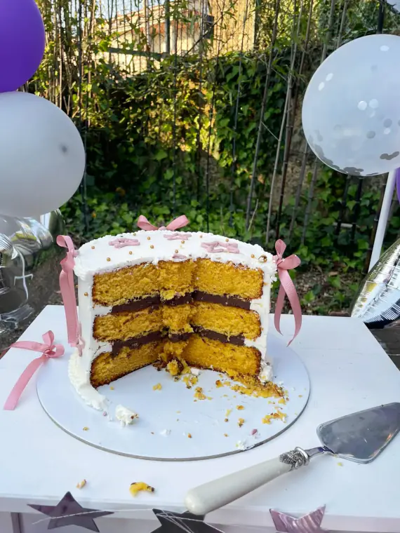
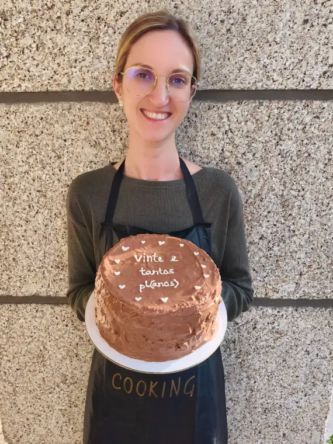

Doces caseiros · Amarante
Bolos caseiros por encomenda em Amarante
Uma terapia em forma de doce, onde o ingrediente secreto é o amor. Bolos de aniversário, finalistas e todos os dias que merecem ser adoçados — feitos à medida de cada história.
amor em forma de bolo ♡
Portefólio
Bolos feitos com amor
Cada bolo é único, pensado para a pessoa e para o momento. Toque num bolo para ver mais fotos e o que leva por dentro.
-
Flores
Há bolos que são sobremesas. E há bolos que parecem um pequeno jardim em flor.
Pão de ló e noz · recheio de massa folhada e creme de ovo · buttercream rosa pêssego com flores naturais.
Este nasceu da vontade de juntar a delicadeza das flores naturais à simplicidade de um bolo elegante. Aqui a personificação de «amor em forma de bolo»: quando o próprio bolo é um presente entre sabor e flores.
-
A Cerejinha
«A cerejinha que faltava na nossa vida!»
Buttercream em degradé de rosa a vermelho, cerejas e laço · bolachas decoradas a condizer.
-
Super Mário
Mais um «level up» na vida do meu afilhado!
Cenoura · recheio de chocolate crocante · buttercream com pintas coloridas e toppers do Super Mário.
Na vida, tal como no mundo do Super Mário, há sempre desafios, saltos inesperados e muitas moedas escondidas pelo caminho! E crescer também é sobre isso: às vezes tropeçamos, outras ganhamos estrelas e seguimos com um sorriso.
-
Elegância
Um bolo nunca é só um bolo. É tudo o que lhe dedico até chegar aqui.
Pão de ló e noz · recheio de creme de ovo e massa folhada · merengue queimado ao maçarico.
Por fora, a simplicidade do merengue queimado — aquele dourado delicado que o maçarico transforma em elegância pura. Cada chama deixa uma marca única, como se o tempo tivesse passado devagar sobre o açúcar. Um bolo assim não precisa de mais nada para ser bonito: brilha por si.
-
Patrulha Pata
Por detrás de um bolo, há uma história. Há felicidade. Há alegria. Há agradecimento.
Baunilha · recheio de curd de frutos vermelhos · buttercream com rosetas e o tema da Patrulha Pata.
Um bolo nunca é só um bolo: é o adoçar os convidados, o agradecer-lhes naquela fatia — o obrigado por estarem ali e por fazerem parte da vida. Construir um projeto destes é saber que devo acreditar em mim, continuar a treinar e a fazer melhor. Irei sempre com medo, mas devo ir — porque vale a pena todo o esforço, todo o tempo e toda a dedicação, mesmo a conciliar com o trabalho a tempo inteiro e as «lidas» de casa.
-
Vintage Rosa
Folhos, grinaldas e tons de rosa — um clássico vintage que nunca passa de moda.
Buttercream rosa e branco em estilo vintage, com folhos e grinaldas.
-
Bailarina
Um bolo delicado e suave que transparece harmonia e movimento, tal como cada passo de dança.
Pão de ló · recheio de Kinder Bueno · buttercream rosa com bailarina e balões.
Com o detalhe dos balões segurados pela bailarina. Deslize as fotos até ao final para ver o bolo na mesa da festa!
-
O último dos 20
Fechar um ciclo com a mesma leveza e beleza de uma flor.
Pão de ló · recheio de massa folhada e creme de ovo · buttercream com flores em rosa e bordô.
Para a despedida dos vinte anos com toda a elegância, um bolo minimalista mas cheio de significado, adornado com tons rosa e bordô e a frase perfeita para o momento: «O último dos 20». Porque os anos passam, mas a doçura de celebrar a vida deve manter-se sempre.
-
Profissão de Fé
Um bolo cheio de brilho e elegância para celebrar a profissão de fé de uma princesa.
Chocolate · recheio de chocolate crocante · buttercream com flores em rosa e drip dourado.
Confissão: o drip dourado não correu como eu queria. Apesar de o bolo estar bem frio, com o calor extremo começou a escorrer enquanto o ia aplicando à volta… Acabou por dar um resultado diferente do esperado, mas igualmente bonito e elegante.
-
Stitch & Lilo
Mais uma vez a saga do Stitch a pintar os aniversários dos mais pequeninos!
Baunilha · recheio de curd de frutos vermelhos · buttercream rosa com Stitch, Angel e Lilo.
Neste bolo cor-de-rosa e fofinho, eles brincam na areia lado a lado, como se o mundo fosse só sol, flores e gargalhadas. Porque a fantasia é bonita, mas o melhor encanto está sempre no que vivemos de verdade.
-
Frozen
Para quem não consegue fazer «let it go» da Elsa, da Anna e do Olaf.
Buttercream azul com toppers do Frozen e pérolas.
-
Bolo de Laranja
Porque nem sempre os bolos precisam de recheios, coberturas e efeitos para serem bonitos.
Bolo de laranja simples, fofo e suculento · decorado com laranja caramelizada e fio de ráfia.
Este laranjão é a prova disso! Um bolo simples, decorado de forma minimalista mas atenta aos detalhes.
-
Chapter 29
29 anos celebrados em tons de azul, elegância e muita doçura.
Red velvet · recheio de cream cheese · buttercream azul com pérolas açucaradas.
Porque cada bolo é para uma ocasião única e, por isso, feito especialmente à «medida» de cada personalidade ou de cada história.
-
Laço & Corações
Um laço, muitos corações e cor por todo o lado.
Buttercream branco com corações coloridos, folhos e laço de fita.
-
Bolo de Finalistas
Cada conquista começa com um sonho — e todas as conquistas merecem ser adoçadas.
Chocolate · recheio de chocolate crocante · buttercream lilás com pérolas, flores, cartola e diploma.
Cada conquista ganha forma com muito trabalho, dedicação e coragem — e a estrela principal deste bolo são a cartola e o diploma. Que voes alto e conquistes todo o sucesso que mereces!
-
Borboletas
Símbolos de transformação, liberdade e leveza.
Cenoura · recheio de chocolate crocante · buttercream rosa e branco em ondas, com borboletas.
As borboletas representam o poder de se reinventar, de passar por mudanças e ainda assim manter a beleza e a delicadeza. Este bolo nasceu dessa inspiração — e as ondas da cobertura dão o efeito das borboletas a dançar à volta do bolo e no seu topo.
-
Ladybug
5 anos de magia, aventuras e muita doçura — à medida dos pequenos heróis.
Pão de ló · recheio de massa folhada e creme de ovo.
O vermelho da Ladybug, as pintinhas pretas e muita energia num bolinho feito para tornar este dia ainda mais especial — com uma combinação de sabores que atravessa gerações.
-
Para quem ama cavalos
Criar bolos personalizados é isto: pegar no que a pessoa mais gosta e transformar em sabor.
Chocolate e pão de ló · recheio de chocolate crocante · ganache de chocolate batida e bolacha.
Um bolo surpresa de uma esposa para o marido, apaixonado por cavalos. Gosto de ajudar a surpreender. Gosto de adoçar os momentos. Gosto deste mundo de criar bolos que sejam tão únicos como as pessoas para quem são feitos.
-
Estrelas & Laços
Um bolo saído de um sonho: entre estrelas e laços, pensado para tornar um dia especial ainda mais mágico.
Bolo de cenoura · recheio de chocolate crocante.
No cenário montado para a festa surpresa da princesa, o bolo ficou super elegante — e o recheio de chocolate crocante fez as delícias de quem provou.
-
Frutas de Outono
Cores de outono com a frescura do calor que ainda teima em ficar.
Chocolate · recheio de creme de ovo · semi naked cake com buttercream fininho e fruta fresca.
O outono está aí, mas o sol e o calor continuam a presentear-nos — por isso este bolinho leva frutas com cores de outono e toda a frescura do verão.
-
Pão de Ló Húmido
Um bolinho tradicional que faz as delícias de todos.
Pão de ló na versão húmida · embalado numa base gira e saquinho, com autocolante e mensagem especial.
Não é uma excelente prenda para os padrinhos na Páscoa? Assim adoçamos-lhes «o bico»! Disponível em épocas especiais, com stock muito limitado.
-
K-Pop
Para uma fã de K-pop que celebrou mais um ano rodeada de música, brilho e sorrisos.
Chocolate e pão de ló · recheio de chocolate crocante · buttercream lilás com toppers do tema.
Às vezes tudo o que precisamos é de um motivo para celebrar… e de uma fatia de bolo para adoçar o dia. Recheio de chocolate crocante para agradar a todos os pequenotes, e velas coloridas para dar vida à festa!
-
Frutos Vermelhos
Não é só o bolo, são os detalhes! É tornar aquele momento uma memória.
Pão de ló e noz · recheio de massa folhada e creme de ovo — uma combinação que não falha.
Uma combinação que se desfaz a cada dentada! Porque cada aniversário merece amor, e da nossa parte vai transformado em bolo.
-
Mais bíceps que anos
Um bolo divertido, à medida de quem leva o treino a sério… ou pelo menos tenta.
Red velvet · recheio de cream cheese · buttercream.
Há aniversários que pedem bolo, velas e umas boas repetições.
-
Simplicidade
Às vezes, menos é mais.
Estilo naked cake · decoração com folhagem natural.
-
18 Anos
Um bolo retangular para celebrar em grande, com muita gente!
Pão de ló · recheio de chocolate crocante · buttercream azul e branco.
O marco que separa a adolescência da idade adulta, a festa que todos anseiam — e depois só querem voltar atrás. A cobertura azul e branca foi pensada para combinar com os balões.
-
Box Dia dos Namorados
Um pequeno-almoço doce para surpreender quem se ama.
Cupcakes de chocolate · folhados com açúcar em pó · cestinha de morangos · bombons · sumo de laranja.
Tudo embrulhado com carinho numa caixa pronta a oferecer, com fita e o selo Adoça-te. Também há packs para o Dia das Madrinhas e outras datas especiais — pergunte!
-
Primeiro Aniversário
Um ano de vida merece balões, cor e muita doçura.
Buttercream branco com nome em dourado e balões em tons pastel.
-
Batizado
Um dia de paz e bênçãos, em tons de azul e branco.
Buttercream branco com pinceladas azuis e topper de pomba · cupcakes e bolachas decoradas a condizer.
-
Quanta humilhação por um diploma!
Porque o fim do curso também se celebra a rir.
Buttercream branco com desenho divertido e granulado colorido.
-
CASU
Um bolo personalizado para celebrar em grande — com mesa de doces a condizer.
Bolo retangular com buttercream branco e letras personalizadas.
-
Hello 28!
Simples, divertido e cheio de corações.
Buttercream branco com corações pretos e acabamento em folhos.
-
29 anos, cheio de sede
«29 anos, cheio de sede, moço!» — para quem celebra com humor.
Buttercream branco com desenho e frase personalizados.
-
Last birthday before become a mum
O último aniversário antes de ser mãe — uma fase tão especial merece um bolo à altura.
Bolo retangular com rosetas de buttercream em tons de chocolate e caramelo.
-
50+2 & 20+9
Dois aniversários, um só bolo — e um jardim de flores coloridas.
Buttercream branco com flores de várias cores.
-
Pérolas
Textura, cor e pérolas: a elegância está nos pormenores.
Buttercream cor de malva com textura em espátula e pérolas.
Veja mais criações no Instagram @adoca_.te
Para cada momento
Ocasiões que merecem ser adoçadas
-
Bolos de aniversário
Personalizados de raiz: tema, cores, frase e sabor à medida de quem celebra — dos 18 aos «vinte e tantos» e muito mais.
-
Bolos infantis
Do Super Mário ao Stitch, da Ladybug à bailarina: os heróis favoritos dos mais pequenos, em bolo.
-
Dia dos Namorados
Packs especiais para surpreender quem se ama — doçura embrulhada com carinho.
-
Dia das Madrinhas
Um mimo doce para agradecer a quem está sempre lá. Packs pensados para oferecer.
-
Batizados, comunhões & finalistas
Para celebrar conquistas, a profissão de fé, um batizado ou um evento — e doces de Páscoa para a mesa da família.
-
Sobremesas
Sobremesas caseiras para almoços de família, jantares e festas — porque todos os dias são especiais.

Massas e recheios
Monte o seu bolo
Escolha a(s) massa(s), o(s) recheio(s) e a cobertura. Pode misturar — o bolo é seu!
Massas
- Pão de ló
- Noz
- Chocolate / cacau
- Red velvet
- Cenoura
- Laranja / limão
- Baunilha
Recheios
- Creme de ovo
- Creme pasteleiro
- Chocolate crocante
- Oreo
- Brigadeiro (chocolate ou laranja)
- Cream cheese
- Corneto de morango
- Curd de limão, laranja ou frutos vermelhos
- Compota de frutos vermelhos
- Kinder Bueno
Coberturas
- Buttercream
- Chantilly
- Ganache
Decoração à medida: flores, pérolas, frases, toppers e as cores que quiser.
As combinações mais pedidas
- Best-seller Pão de ló e noz creme de ovo e massa folhada, com cobertura de chantilly ou buttercream
- Red velvet cream cheese e compota de frutos vermelhos
- Limão e mirtilos buttercream de cream cheese de limão
- Choco crocante chocolate com recheio de chocolate crocante e buttercream
- Cenoura com ganache de chocolate
- Laranja com brigadeiro
- Chocolate & morango recheio de corneto de morango
- Chocolate & Oreo recheio de Oreo
são as mais pedidas — mas cada um pode ajustar ao seu gosto!
Para adoçar o dia
Doces caseiros & sobremesas
Nem tudo precisa de ser uma festa. Bolos do dia a dia, tartes e sobremesas para a mesa de domingo, o lanche ou para levar a casa de alguém.

Quem está por trás
E afinal, quem sou eu?
Olá! Sou a Joana, técnica de farmácia de profissão, apaixonada pela «cozinha» desde sempre — e, confesso, prefiro mil vezes os doces aos salgados.
A Adoça-te não é o meu compromisso a tempo inteiro, mas é o meu escape. Exige muito de mim e do meu tempo para pesquisar, testar, experimentar e chegar aos resultados — contudo, sinto-me bem neste mundo da doçaria, onde tenho tanto para aprender.
É um projeto que faço por gosto e, às vezes, isso nota-se nos bastidores: entre o trabalho a tempo inteiro e a logística de cada bolo, há fotos tiradas à última hora, com luz artificial, mesmo antes da entrega. Mas há uma coisa que nunca fica para depois: o amor que vai em cada bolo.
- Formações online em várias áreas da pastelaria, para aprender as bases e as técnicas.
- Workshop de tendências em buttercream «Uma tarde de muitas aprendizagens, tentativas, falhas e pedidos de ajuda» — o bichinho estava a falar mais alto e quis investir e aprender mais.
- Sempre a aprender cada bolo novo é um desafio e uma oportunidade de fazer ainda melhor.
Encomendas
Como encomendar
As encomendas são aceites, mediante disponibilidade, com um mínimo de 5 dias de antecedência.
- Envie mensagem com a data pretendida. Pelo formulário, WhatsApp, telefone ou redes sociais.
- Indique a(s) massa(s), recheio(s), cobertura e decoração. Veja as opções e combinações — ou peça ajuda a escolher.
- Diga para quantas pessoas é o bolo. Assim o tamanho fica certinho.
- Se quiser, envie uma imagem de inspiração. Ajuda muito a perceber o que imagina.
desfruta! ♡
Dúvidas
Perguntas frequentes
Como posso encomendar um bolo?
Pode encomendar por WhatsApp, por telefone, por mensagem no Instagram ou Facebook, ou através do formulário de encomenda, que envia o pedido diretamente por WhatsApp.
Em que zonas fazem bolos por encomenda?
Fazemos bolos por encomenda em Amarante. Com planeamento, também é possível entregar no Hospital de Vila Real — fale connosco com antecedência. Para outras localidades, contacte-nos e combinamos.
Com quanta antecedência devo encomendar?
As encomendas são aceites, mediante disponibilidade, com um mínimo de 5 dias de antecedência. Em épocas festivas (Dia dos Namorados, Dia das Madrinhas, Páscoa) convém encomendar mais cedo.
Também fazem doces e sobremesas sem ser bolos de festa?
Sim — bolos caseiros, tartes, cheesecakes, pavlova, brownies, cupcakes, bolo de bolacha e os tradicionais doces de São Gonçalo de Amarante. Veja o menu de doces caseiros.
Posso escolher o sabor e a decoração?
Sim! Cada bolo é feito à medida: escolhe a massa, o recheio, a cobertura, as cores e o tema. As combinações mais pedidas são um bom ponto de partida, mas cada um pode ajustar ao seu gosto.
Fale connosco
Contactos
Bolos caseiros em Louredo, Amarante · Encomendas para Amarante.